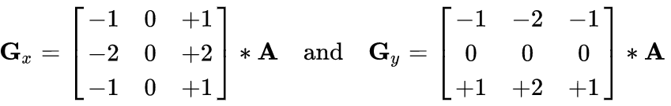

图像基本操作
环境配置地址
- Anaconda:https://www.anaconda.com/download/
- Python_whl:https://www.lfd.uci.edu/~gohlke/pythonlibs/#opencv
- pyCharm：https://www.jetbrains.com/pycharm/
数据读取-图像
- cv2.IMREAD_COLOR：彩色图像
- cv2.IMREAD_GRAYSCALE：灰度图像
import cv2
import matplotlib.pyplot as plt
import numpy as np
# 读取彩色图像
img = cv2.imread("1.jpg", cv2.IMREAD_COLOR)
# 读取灰度图像
img2 =cv2.imread('2.jpg',cv2.IMREAD_GRAYSCALE)图像的显示
#图像的显示,也可以创建多个窗口
cv2.imshow('image',img)
# 等待时间，毫秒级，0表示任意键终止
cv2.waitKey(0)
cv2.destroyAllWindows()图像的保存
#保存
cv2.imwrite('my_img.jpg',img)数据读取-视频
- cv2.VideoCapture可以捕获摄像头，用数字来控制不同的设备，例如0,1。
- 如果是视频文件，直接指定好路径即可。
# 读取摄像头
# vc = cv2.VideoCapture(0)
# 读取视频
vc = cv2.VideoCapture('test.mp4')
# 检查是否打开正确
if vc.isOpened():
open, frame = vc.read()
else:
open = False
while open:
ret, frame = vc.read()
if frame is None:
break
if ret == True:
gray = cv2.cvtColor(frame, cv2.COLOR_BGR2GRAY)
cv2.imshow('result', gray)
# 等待1000ms或者按下按键ESC时退出
if cv2.waitKey(1000) & 0xFF == 27:
break
vc.release()
cv2.destroyAllWindows()截取部分图像数据
def cv_show(name,img):
cv2.imshow(name,img)
cv2.waitKey(0)
cv2.destroyAllWindows()
img=cv2.imread('cat.jpg')
# 截取图片
cat=img[0:50,0:200]
cv_show('cat',cat)颜色通道提取
b,g,r=cv2.split(img)
img=cv2.merge((b,g,r))
# 只保留R
cur_img = img.copy()
cur_img[:,:,0] = 0
cur_img[:,:,1] = 0
# 只保留G
cur_img = img.copy()
cur_img[:,:,0] = 0
cur_img[:,:,2] = 0
# 只保留B
cur_img = img.copy()
cur_img[:,:,1] = 0
cur_img[:,:,2] = 0图像的融合
img_bear = cv2.imread("1.jpg")
img_people = cv2.imread("2.jpg")
img_bear.shape #(639, 639, 3)
img_people.shape #(568, 568, 3)
img_bear = cv2.resize(img_bear, (568,568))
img_bear.shape #(568, 568, 3)
# res=ax+by+c
res = cv2.addWeighted(img_bear, 0.4, img_people, 0.6, 0)
plt.imshow(res)
图像尺寸设置
- x轴变为两倍
res = cv2.resize(img_bear, (0, 0), fx=2, fy=1)
plt.imshow(res)
- y轴变为两倍
res = cv2.resize(img_bear, (0, 0), fx=1, fy=2)
plt.imshow(res)图像阈值
ret, dst = cv2.threshold（src, thresh, maxval, type）
- src： 输入图，只能输入单通道图像，通常来说为灰度图
- dst： 输出图
- thresh： 阈值
- maxval： 当像素值超过了阈值（或者小于阈值，根据type来决定），所赋予的值
- type：二值化操作的类型，包含以下5种类型： cv2.THRESH_BINARY； cv2.THRESH_BINARY_INV； cv2.THRESH_TRUNC； cv2.THRESH_TOZERO；cv2.THRESH_TOZERO_INV
- cv2.THRESH_BINARY 超过阈值部分取maxval（最大值），否则取0
- cv2.THRESH_BINARY_INV THRESH_BINARY的反转
- cv2.THRESH_TRUNC 大于阈值部分设为阈值，否则不变
- cv2.THRESH_TOZERO 大于阈值部分不改变，否则设为0
- cv2.THRESH_TOZERO_INV THRESH_TOZERO的反转
img_gray = cv2.imread("2.jpg", cv2.IMREAD_GRAYSCALE)
res, thresh1 = cv2.threshold(img_gray, 127, 255, cv2.THRESH_BINARY)
res, thresh2 = cv2.threshold(img_gray, 127, 255, cv2.THRESH_BINARY_INV)
res, thresh3 = cv2.threshold(img_gray, 127, 255, cv2.THRESH_TRUNC)
res, thresh4 = cv2.threshold(img_gray, 127, 255, cv2.THRESH_TRIANGLE)
res, thresh5 = cv2.threshold(img_gray, 127, 255, cv2.THRESH_TOZERO)
res, thresh6 = cv2.threshold(img_gray, 127, 255, cv2.THRESH_TOZERO_INV)
# res, thresh7 = cv2.threshold(img_gray, 127, 255, cv2.THRESH_MASK)
# res, thresh8 = cv2.threshold(img_gray, 127, 255, cv2.THRESH_OTSU)
titles = ['Original Image', 'BINARY', 'BINARY_INV', 'TRUNC', 'TRIANGLE','TOZERO', 'TOZERO_INV','MASK','OTSU']
images = [img_gray, thresh1, thresh2, thresh3, thresh4, thresh5, thresh6, thresh7, thresh8]
for i in range(6):
plt.subplot(2, 3, i + 1)
plt.imshow(images[i], 'gray')
plt.title(titles[i])
plt.xticks([]), plt.yticks([])
plt.show()
图像平滑
img = cv2.imread("lenaNoise.png")
plt.imshow(img[:,:,(2,1,0)])
# 均值滤波
# 简单的平均卷积操作
blur = cv2.blur(img, (3, 3))
# cv_show('blur', blur)
# 方框滤波
# 基本和均值一样，可以选择归一化,容易越界
box = cv2.boxFilter(img,-1,(3,3), normalize=False)
# 方框滤波
# 基本和均值一样，可以选择归一化
box = cv2.boxFilter(img,-1,(3,3), normalize=True)
# 高斯滤波
# 高斯模糊的卷积核里的数值是满足高斯分布，相当于更重视中间的
aussian = cv2.GaussianBlur(img, (5, 5), 1)
# 中值滤波
# 相当于用中值代替
median = cv2.medianBlur(img, 5) # 中值滤波,指定大小是5×5
# 展示所有的
res = np.hstack((blur,aussian,median))
plt.imshow(res[:,:,(2,1,0)])形态学-腐蚀
img = cv2.imread('dige.png')
kernel = np.ones((30,30), np.uint8)
erosion_1 = cv2.erode(pie, kernel, iterations=1)# 腐蚀1次
erosion_2 = cv2.erode(pie,kernel,iterations = 2)# 2次
erosion_3 = cv2.erode(pie,kernel,iterations = 3)# 3次
res = np.hstack((erosion_1, erosion_2, erosion_3))
plt.imshow(res[:,:,(2,1,0)])
形态学-膨胀
pie = cv2.imread('pie.png')
kernel = np.ones((30,30),np.uint8)
dilate_1 = cv2.dilate(pie,kernel,iterations = 1)
dilate_2 = cv2.dilate(pie,kernel,iterations = 2)
dilate_3 = cv2.dilate(pie,kernel,iterations = 3)
res = np.hstack((dilate_1,dilate_2,dilate_3))
plt.imshow(res[:,:,(2,1,0)])开运算和闭运算
# 开：先腐蚀，再膨胀
img = cv2.imread('dige.png')
kernel = np.ones((5,5),np.uint8)
opening = cv2.morphologyEx(img, cv2.MORPH_OPEN, kernel)
plt.imshow(opening)
# 闭：先膨胀，再腐蚀
img = cv2.imread('dige.png')
kernel = np.ones((5,5),np.uint8)
closing = cv2.morphologyEx(img, cv2.MORPH_CLOSE, kernel)
plt.imshow(closing)
礼帽和黑帽
- 礼帽 = 原始输入-开运算结果
- 黑帽 = 闭运算-原始输入
#礼帽
img = cv2.imread('dige.png')
tophat = cv2.morphologyEx(img, cv2.MORPH_TOPHAT, kernel)
plt.imshow(tophat)
#黑帽
img = cv2.imread('dige.png')
blackhat = cv2.morphologyEx(img,cv2.MORPH_BLACKHAT, kernel)
plt.imshow(tophat)图像梯度-Sobel算子

dst = cv2.Sobel（src, ddepth, dx, dy, ksize）
- ddepth:图像的深度
- dx和dy分别表示水平和竖直方向
- ksize是Sobel算子的大小
sobelx = cv2.Sobel(img,cv2.CV_64F,1,0,ksize=3)
sobelx = cv2.convertScaleAbs(sobelx)
sobely = cv2.Sobel(img,cv2.CV_64F,0,1,ksize=3)
sobely = cv2.convertScaleAbs(sobely)
# 分别计算x和y，再求和
sobelxy = cv2.addWeighted(sobelx,0.5,sobely,0.5,0)
plt.imshow(sobelxy)
# 不建议直接计算
sobelxy=cv2.Sobel(img,cv2.CV_64F,1,1,ksize=3)
sobelxy = cv2.convertScaleAbs(sobelxy)
plt.imshow(sobelxy)图像梯度-Scharr算子
图像梯度-laplacian算子
img = cv2.imread("lena.jpg", cv2.IMREAD_GRAYSCALE)
sobelx = cv2.Sobel(img,cv2.CV_64F,1,0,ksize=3)
sobely = cv2.Sobel(img,cv2.CV_64F,0,1,ksize=3)
sobelx = cv2.convertScaleAbs(sobelx)
sobely = cv2.convertScaleAbs(sobely)
sobelxy = cv2.addWeighted(sobelx,0.5,sobely,0.5,0)
scharrx = cv2.Scharr(img, cv2.CV_64F,1,0)
scharry = cv2.Scharr(img, cv2.CV_64F,0,1)
scharrx = cv2.convertScaleAbs(scharrx)
scharry = cv2.convertScaleAbs(scharry)
scharrxy = cv2.addWeighted(scharrx,0.5,scharry,0.5,0)
laplacian = cv2.Laplacian(img,cv2.CV_64F)
laplacian = cv2.convertScaleAbs(laplacian)
res = np.hstack((sobelxy,scharrxy,laplacian))
plt.imshow(res)Canny边缘检测
- 1) 使用高斯滤波器，以平滑图像，滤除噪声。
- 2) 计算图像中每个像素点的梯度强度和方向。
- 3) 应用非极大值（Non-Maximum Suppression）抑制，以消除边缘检测带来的杂散响应。
- 4) 应用双阈值（Double-Threshold）检测来确定真实的和潜在的边缘。
- 5) 通过抑制孤立的弱边缘最终完成边缘检测。
1.高斯滤波
2.梯度和方向
3.非极大值抑制

4.双阈值检测
img = cv2.imread("lena.jpg", cv2.IMREAD_GRAYSCALE)
v1 = cv2.Canny(img, 80,150)
v2 = cv2.Canny(img, 50,100)
res = np.hstack((v1,v2))
plt.imshow(res)
# cv_show(res, 'res')图像金字塔
- 高斯金字塔
- 拉普拉斯金字塔

高斯金字塔：向下采样
高斯金字塔：向上采样
img = cv2.imread("1.jpg")
#下采样
down = cv2.pyrDown(img)
# 上采样
up = cv2.pyrUp(img)
# 先上采样再下采样
up=cv2.pyrUp(img)
up_down=cv2.pyrDown(up)
cv_show(up_down,'up_down')图像轮廓
cv2.findContours（img,mode,method）
mode:轮廓检索模式
- RETR_EXTERNAL ：只检索最外面的轮廓；
- RETR_LIST：检索所有的轮廓，并将其保存到一条链表当中；
- RETR_CCOMP：检索所有的轮廓，并将他们组织为两层：顶层是各部分的外部边界，第二层是空洞的边界;
- RETR_TREE：检索所有的轮廓，并重构嵌套轮廓的整个层次;(一般使用这个)
method:轮廓逼近方法
- CHAIN_APPROX_NONE：以Freeman链码的方式输出轮廓，所有其他方法输出多边形（顶点的序列）。
- CHAIN_APPROX_SIMPLE:压缩水平的、垂直的和斜的部分，也就是，函数只保留他们的终点部分。
一般都是使用二值图像进行轮廓检测
img = cv2.imread("contours.png")
gray = cv2.cvtColor(img, cv2.COLOR_BGR2GRAY)
ret, thresh = cv2.threshold(gray, 127, 255, cv2.THRESH_BINARY)
# contours：轮廓的内容，hierarchy：层级（用不上）
contours, hierarchy = cv2.findContours(thresh, cv2.RETR_TREE, cv2.CHAIN_APPROX_NONE)
#传入绘制图像，轮廓，轮廓索引，颜色模式，线条厚度
# 注意需要copy,要不原图会变。。。
draw_img = img.copy()
res = cv2.drawContours(draw_img, contours, -1, (0, 255, 0), 2)
cv_show(res, 'res')绘制边界矩形
img = cv2.imread('contours.png')
gray = cv2.cvtColor(img, cv2.COLOR_BGR2GRAY)
ret, thresh = cv2.threshold(gray, 127, 255, cv2.THRESH_BINARY)
contours, hierarchy = cv2.findContours(thresh, cv2.RETR_TREE, cv2.CHAIN_APPROX_NONE)
cnt = contours[2]
x,y,w,h = cv2.boundingRect(cnt)
img = cv2.rectangle(img, (x,y), (x+w,y+h), (0, 255, 0), 2)绘制边界圆
(x,y),radius = cv2.minEnclosingCircle(cnt)
center = (int(x),int(y))
radius = int(radius)
img = cv2.circle(img,center,radius,(0,255,0),2)
cv_show(img,'img')